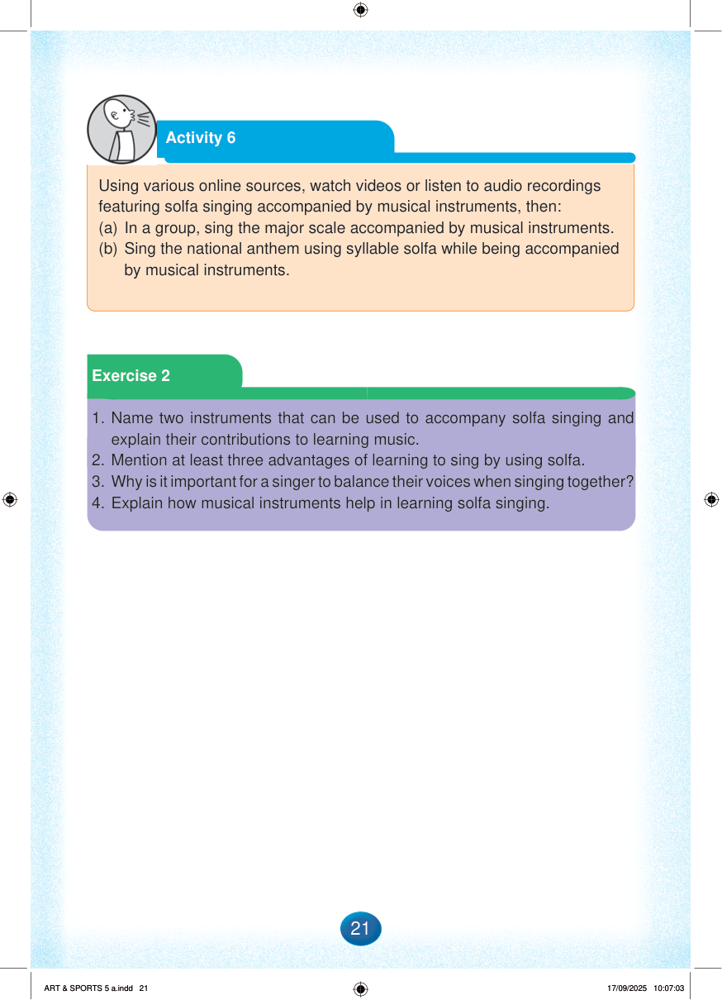

Page background
Activity 6
Using various online sources, watch videos or listen to audio recordings featuring solfa singing accompanied by musical instruments, then:
(a) In a group, sing the major scale accompanied by musical instruments.
(b) Sing the national anthem using syllable solfa while being accompanied by musical instruments.
Exercise 2 heading on a green banner.
Exercise 2
1. Name two instruments that can be used to accompany solfa singing and explain their contributions to learning music.
2. Mention at least three advantages of learning to sing by using solfa.
3. Why is it important for a singer to balance their voices when singing together?
4. Explain how musical instruments help in learning solfa singing.